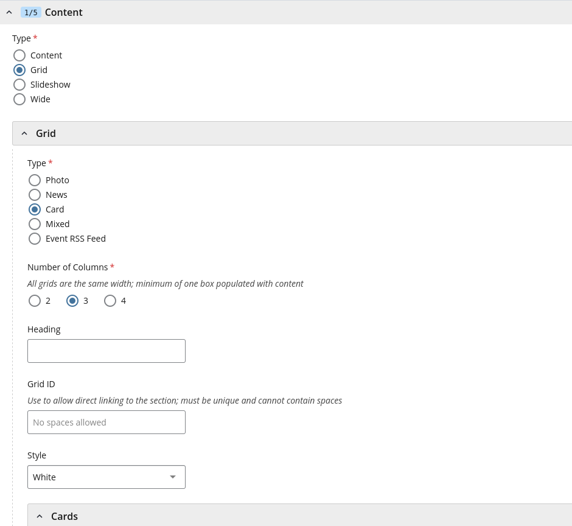
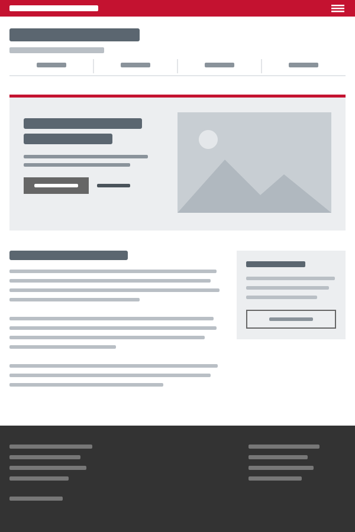

Page Sections
The full-width bands a page is made of: cards, path cards, features, carousels, timelines, testimonials and more.
Stacking Sections Template
A page can be a run of full-width sections, one after another: a
.content block, a grid, a section bar, another grid. On a real page they
go straight inside #content, not inside one another; the examples below
sit in boxes only so the page can show them. In Cascade, each is a content section of
its own (WYSIWYG, Grid or Wide).
<main id="content">
<div class="breadcrumbs"> … </div>
<div class="content"> … </div>
<div class="grid column2 red invert"> … </div>
<div class="grid column2 grey boxes"> … </div>
<div class="content wide red invert globe"> … </div>
<div class="grid column2"> … </div>
</main>
Each section's heading is an <h1>, and headings inside a section (a card, a sub-topic) are <h2> and
below. That holds for every section, including the first one after a hero: the hero's
tagline is an <h1> too, and stays the biggest heading on the page.
Pick levels by what a heading contains, never by where it falls on the page; screen
reader users skim a page by its heading levels.
Section Headings With a Line Template
An optional thin line over a section's heading, to mark where one topic ends and the
next begins on a long page. Add the template's rule-top to the heading.
The line sits just above the heading, with room between them. At the top of a section,
the section's own padding gives the space above the line; further down, the kit adds
it, so the line doesn't crowd a table or callout before it. Right after a band with a
background color, the kit leaves the line off, since the change of color already marks
the new section. An eyebrow can take the line instead of its heading. On a color band
(invert) the line turns white. Its partner, rule-bottom,
puts the line under a heading instead, as in the
sidebar.
rule-top, rule-bottom
Lecture Recording
We record your lecture or event and send you a link to the video, captioned.
Captioning
Send us a video and we'll caption it, usually within a week.
Cards on Gray CMS
A grid is two, three or four columns that stack on phones. With
grey boxes, each column is a white card on a gray band. An
<h1> first in the grid is the band's heading, across the top. Good
for short cards that each lead somewhere. For a line across the band's full width,
such as an introduction under the heading or a link to see more after the cards, use
<p class="cmu-grid-full"> (the kit's only addition here). For which
color to use, see Colors.
grid, column2, column3, column4,
boxes, cmu-grid-full
Ways to Get Started
Design a Course
Set learning objectives and align assessments with them.
In Cascade
- In the page's content, add a section with the green + on any section, then set its Type to Grid.
- Under Grid, set Type to Card, choose the Number of Columns and add a Heading.
- Set Style to Grey, then fill in a Cards item for each card.

Path Cards CMS
Whole-card links that send each audience to its own page. They fit as many columns as
the width allows; cmu-paths--two keeps a pair side by side. The
call-to-action line (cta) is the template's own.
cmu-paths, cmu-paths--two, cmu-path
How It Works CMS
A process in a few numbered columns, for an overview. For instructions people follow, use numbered steps instead.
ol.cmu-flow
- Instructors add syllabiOn the web or from Canvas.
- Departments fill the gapsUpload for many sections at once.
- Everyone can find themSearch by course, semester or department.
I Want To… Template
The same grid without a color: white boxes with a thin border on the page's own
background, headed by what people come to do. Here each box's title is the link, in
the template's red, instead of a call to action (cta) under the text. Use
linked titles when the title says it all, and a call to action when the action needs
its own words. Phrase the titles as the end of the heading's sentence: "I want
to… Borrow a Camera."
grid column3 boxes, a linked <h2>
I Want To…
Borrow a Camera
Cameras, lenses and tripods for any CMU course, free for up to a week.
Reserve a Laptop
Pick a day and a laptop, and it's ready at the desk when you arrive.
Return Equipment
Drop it off at the desk, or see when it's due.
Feature Section Template
A red band with a picture on one side and a heading, a few sentences and a button on
the other, to make one thing stand out on a page. It's a two-column grid in
red invert: the first column holds the image. On red, use the white
outline button, btn ghost.
grid column2 red invert, btn ghost
New This Semester

Find a Syllabus Before You Register
Every course section and its syllabus, from this semester back to 2015, in one place.
Carousel Template
Feature sections that slide, with arrows at the sides and a dot for each slide. Put
two or more grid column2 slides in a js-flickityCustom, and
load the template's carousel script after its main one (Cascade adds it for you):
<script src="https://www.cmu.edu/common/standard-v6/js/flickity.pkgd.min.js"></script>
It never moves by itself. Turn off the dots or arrows with
data-navDotsVisible="false" or
data-navArrowsVisible="false", and stop it going round from the last
slide to the first with data-wrapAround="false". On phones the arrows sit
over the slides' headings; turn them off there if your headings are long, since people
can swipe instead.
Use it sparingly: people rarely look past the first slide, so put the most important one first, and never hide something people need in a later slide.
js-flickityCustom, grid column2
Default Carousel
Straight on the page, or in a light section without invert, with the
template's dark slate dots.
Find a Syllabus Before You Register
Every course section and its syllabus, from this semester back to 2015.
Office Hours Without the Line
Join the queue from anywhere and see how many are ahead of you.
Borrow What Your Project Needs
Cameras, laptops and lights, free for CMU courses.
In Cascade
In the page's content, add a section with the green + on any section, then set its Type to Slideshow and its Style to White. Add a Slide for each, with an Image (700 wide, all the same size), Alt Text and Content.
Inverted Carousel
In a section with a dark background color and invert, such as
darkgrey invert: every slide takes the color, and the dots turn white.
Find a Syllabus Before You Register
Every course section and its syllabus, from this semester back to 2015.
Office Hours Without the Line
Join the queue from anywhere and see how many are ahead of you.
Borrow What Your Project Needs
Cameras, laptops and lights, free for CMU courses.
In Cascade
The same Slideshow, with its Style set to Dark Grey.
Circle Photos Template
Square photos cropped to circles, beside a few paragraphs each. Add
circle to the image, use a square photo and alternate which side it's on.
A content wide block holding an <hr> separates each
pair.
circle, grid column2

Students
Join the queue for any of your courses, and see how many people are ahead of you.
Course Staff
Open office hours, call the next student and see who's waiting.
Timeline Cards Template
The steps of a process in date order, a card for each with a small icon, the step's
name and its dates, on a dark band. It's a
grid column4 darkgreen boxes (or column3) with an
<h1>.
-
Each step's name is an
<h2>, right after its icon. Names may wrap to two lines. A name can link to its section further down the page; it then shows in the template's link red. -
Choose an icon for each step. Use
floatrightto place it beside the heading. See Icons for setup and usage. -
Put the icon, name and any text in a
<div>, then the rule and the date after it. The kit sets the rule and date at the bottom of each card, so the dates line up across a row. -
The dates go under a rule, bold and centered with
aligncenter. - Keep to the same years in each card, or show the year on every date, so the order is clear at a glance.
Style
Write date ranges with a hyphen and no spaces, such as “Jan. 11-15”; see Conventions for dates.
grid column4 darkgreen boxes, floatright,
aligncenter, bi
Spring 2027 Timeline
Uploads Open
Upload from the web or from Canvas, in any common file format, and replace it any time before classes end.
Nov. 2, 2026
Reminders to Instructors
Dec. 7-18, 2026
Classes End
May 7, 2027
Photo Grid Template
Linked photos with a title over each, three or four across. The whole photo is the
link. Use
column2, column3 or column4; an
<h1> first in the grid is its heading, across the full width. Only
an <h1> spans the grid: a paragraph inside it becomes one of the
cells, so put any sentence about the photos in their titles instead. Use photos that
are all the same shape (such as 3:2, at 900 × 600), or the rows come out ragged
and the titles don't line up. At four across, keep titles to two or three words, or
they wrap; a sentence under the title fits at two or three across. On phones the
photos stack.
No photos yet? Fill the grid with CMU photos from PlaceMellon while you build, and swap in the real ones when they're ready.
grid, column2, column3, column4,
photos, photo
In Cascade
A Grid section, as for Cards on Gray, with its Type set to Photo. Each photo has an Image (700 wide, all the same size), Alt Text, a Headline over the photo and a Link.
Testimonial CMS
A quote from a student, alumnus or colleague, with their name, their role and a square
photo beside it. Put it in its own section on a color, such as
content wide cmu-lightgrey. On phones the photo goes above the quote.
- Quote real people, with their permission, and keep it to a sentence or two. Quotation marks around the words are optional; the red mark already says it's a quote.
-
Put their name in
<strong>inside the<cite>, then their role or class on the next line. -
Describe the person in the photo's
alt, not the quote. Use a square photo; the kit crops other shapes to a square.
cmu-testimonial, cmu-lightgrey
Reserving a camera took a minute, and the kit had everything our film needed.
Senior, School of Drama
Text With a Screenshot CMS
Two columns: text on the left, a framed screenshot with a caption on the right. One
column below 760px. Add cmu-shot--browser (see
Screenshots) to draw the screenshot in a
browser window, like the hero's art, as the Gallery does.
cmu-split, figure.cmu-shot, cmu-shot--browser
Find a Syllabus
- Search by course number, title or instructor.
- Narrow it down with the filters on the left.
Annotated Image CMS
A tall image, such as a screenshot of a whole page or a diagram, with callouts beside it. Each callout is pinned next to the part it describes and overlaps the image's edge a little, so people can read it part by part.
-
Name each part. Use a
callout with a
cmu-labeltitle. If a part has its own page, add a call to action linking to it. -
Position each callout. Set
--cmu-atto the middle of the part it describes: 0 is the top of the image, 0.5 is halfway down, and 1 is the bottom. - Keep the introduction short. Put it in the same column as the callouts, with enough room to end above the first one.
-
Give longer text more room. Below 50rem (800px), the component
stacks the introduction, callouts, and image. Add
cmu-annotated--widefor longer introductions or callouts; it keeps them stacked until the component has 70rem (1120px) of space.
cmu-annotated, cmu-annotated-text,
cmu-annotated-notes, cmu-annotated--wide,
--cmu-at, cmu-callout
-
1. Header
The red strip, then the site's name and its navigation.
-
2. A Band
A full-width section with its own color, here a hero with a heading, a button and a photo.
-
3. Content and Sidebar
The page's own text, with boxes beside it for links, contacts or signing in.
-
4. Footer
The office's address and links, the same on every page.


FAQ Teaser CMS
A few common questions and short answers in columns, followed by a link to the full FAQ.
cmu-faq-teaser
Big Buttons Template
Two wide buttons side by side for the two things most people come to do. Each is a
btn wide inside an <h2>, which makes its text large.
grid column2, btn wide, aligncenter
Section Bar Template
A full-width colored bar with a heading, to start a new part of a long page, often
with the globe. It's a .content wide block with a color; give it an
id to link to it.
content wide, red invert globe
2026-27 Fellows
For a statement rather than a heading, such as a mission, use a lighter band with the
text centered: grey plaid, which the template fades so dark text stays
readable. On phones it's plain white, since the template drops the plaid there (see
Background Patterns), so don't count on it to set the
statement apart.
Equipment Checkout is run by Teaching Technology. Our mission is to put the tools for great class projects in every student's hands.
Announcements Template
A full-width band across the top of a page, right under the breadcrumbs, for something
everyone who comes to the page should know first: who the page is for, a deadline, a
change. Site authors write it and take it down; it says the same thing to everyone.
It's a content wide block in a template color. Keep to one at a time, and
a sentence or two.
-
Dark gray (
darkgrey invert) for who a page is for, with the text in bold. -
Gold for a time-sensitive update, with a bold lead-in. Gold takes
dark text, so it takes no
invert. When the whole notice is one short statement, make it a centered<h3>instead; center it with the template'saligncenter, not an inline style. -
Green (
green invert) for something newly available, with a call to action when there's a next step people can take. -
Blue (
blue invert) for a note set apart lower on the page, with an<h4>for small bold capitals. - Not red: A red band reads as a campus alert. And not for the result of something someone just did: that's a flash message. For an aside within a section, such as a tip or a warning, use a callout.
content wide, darkgrey invert, gold,
green invert, blue invert
Students: this page is for instructors and department administrators. Syllabi are available in the syllabus registry.
Finals Week: Office hours follow a reduced schedule from May 4 to 12.
Camera kits are limited this month. More arrive by mid-September; check back here for updates.
Ready for your next class project? Reserve a Camera Kit
Holiday Hours
The checkout desk closes Dec. 19 and reopens Jan. 12. Return borrowed equipment before the break.
Link Bank Template
Red columns of links at the bottom of a page, to the site's main pages and its
neighbors. It's a grid with nav, and each column a nav-list;
darkgrey invert works too. Keep it to links: a way into an app goes in
the page, not here. A column can start with an <h1>, which shows as
a small bold label.
grid column3 red invert nav, nav-list
Background Patterns Template
Two background patterns that go with a color: globe, a faint map, and
plaid, the university tartan. Both come from the template's own image
files, so they follow the brand rules; never draw your own tartan. Use one for a
section bar or a feature section, not behind long text. The template shows them only
from 768px up; on phones the color is plain, and grey plaid has no gray
at all, so don't count on the pattern to set a section apart.
globe, plaid, with a color
<div class="content wide red invert globe"> … </div>
<div class="grid column3 darkgrey invert plaid"> … </div>